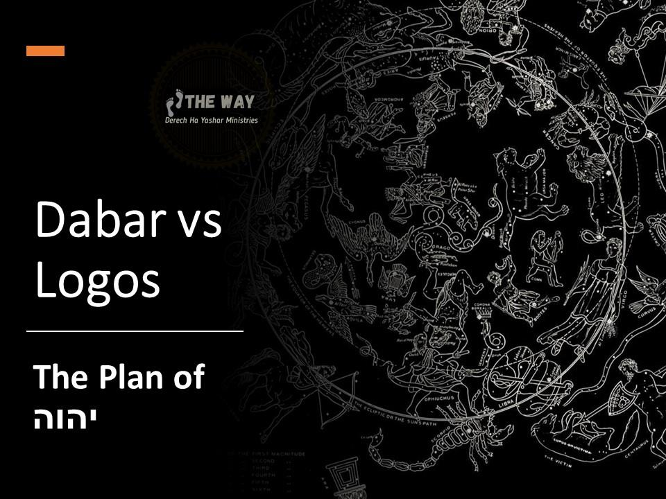
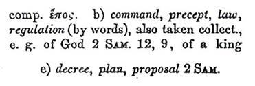

Contents

The Gospel of Yochanan was originally written in Hebrew then Hellenized into a Greek appropriate book in order to assimilate pagan religions through syncretism. The Hebrew word used by Yochanan in Yochanan Chapter 1 was dâbâr.
H1697
Original: ּדבר
Transliteration: dâbâr
BDB Definition:
speech, word, speaking, thing speech saying, utterance word, words business, occupation, acts, matter, case, something, manner
Origin: from H1696
Strong's Definition: From H1696; a word ; by implication a matter (as spoken of) of thing ; adverbially a cause: - act, advice, affair, answer, X any such (thing), + because of, book, business, care, case, cause, certain rate, + chronicles, commandment, X commune (-ication), + concern [-ing], + confer, counsel, + dearth, decree, deed, X disease, due, duty, effect, + eloquent, errand, [evil favoured-] ness, + glory, + harm, hurt, + iniquity, + judgment, language, + lying, manner, matter, message, [no] thing, oracle, X ought, X parts, + pertaining, + please, portion, + power, promise, provision, purpose, question, rate, reason, report, request, X (as hast) said, sake, saying, sentence, + sign, + so, some [uncleanness], somewhat to say, + song, speech, X spoken, talk, task, + that, X there done, thing (concerning), thought,[vision] + thus, tidings, what [-soever], + wherewith, which, word, work.
NASB Translation: account (2), account* (2), act (1), acts (52), advice (3), affair (3), affairs (3), agreement (1), amount* (2), annals (1), answer (6), answer* (5), anything (12), anything* (4), asked (1), because* (10), business (3), case (9), cases (1), cause (3), charge (2), Chronicles (3), Chronicles* (38), claims (1), command (11), commandment (1), commandments (1), Commandments (2), commands (1), compliments* (1), concerned (1), concerning (1), concerning* (3), conclusion* (1), conditions (1), conduct (2), conferred (1), consultation (1), conversation (1), counsel (1), custom (1), customs (1), dealings (2), decree (2), deed (2), deeds (3), defect* (1), desires (1), dispute (5), disputes (1), doings (1), duty (1), edict (1), eloquent* (1), event (3), events (5), fulfilment (1), harm (1), harm* (1), idea (1), instructed (1), instructions (2), manner (7), matter (45), matters (2), message (18), nothing* (21), oath (1), obligations (1), one of the promises (1), order (1), parts (1), pertains (2), plan (2), plot (2), portion (3), promise (8), proposal (3), proposed (1), proven (1), purpose (2), question (1), questions (3), ration (1), reason (4), records (5), regard (1), render (1), reply* (1), report (4), reported* (1), reports (4), request (3), required (2), requires (1), rule (2), said (5), same thing (1), saying (3), says (1), so much (2), some (1), something (4), songs* (1), speak (2), speech (2), talk (2), talking* (1), task (1), theme (1), thing (96), things (36), things at your word (1), things the word (1), this* (1), thought (1), thoughts (1), threats* (1), thus* (1), told* (1), trouble* (1), verdict (2), way (3), what (4), what* (5), whatever* (3), word (454), words (375), work required (1).
A Hebrew and Chaldee Lexicon to the Brit Chadashah/Old Testament shows us that the Hebrew word dâbâr refers to יהוה's Plan and His Torah/Laws/Instructions.
A Hebrew and Chaldee Lexicon to the Brit Chadashah/Old Testament, by Julius Furst, page 312
dâbâr

The Interpreter's Dictionary states emphatically that “word” or “logos” or “dâbâr’ as used in Scripture is referring to “יהוה’s revealed will or predestined Plan” for mankind.
Speaking of the dâbâr i.e. “word” of יהוה, The Interpreter's Dictionary states emphatically:
The Interpreter's Dictionary , Volulme 4 pages 870-871
"The word of God" (o logof tou qeou) is used of:
(a) the OT law (cf. Mark 7:13=Matt 15:6, where it is contrasted with the tradition of the Jews);
(b) a particular OT passage (cf. John 10:35, referring to Ps. 82:6);
(c) in a more general sense, God's revealed will, or his whole plan and purpose for mankind (cf. Luke 11:28; Rom. 9:6; Col. 1:25-27, where it is defined as the "mystery hidden for ages and generations but now manifest to his saints..., which is Christ in you"; Heb. 4:12);
The real meaning of Yochanan Chapter 1
What we have learned above is that our English Bibles are modern Hellenized uninspired translations that Hellenized the original Hebraic mindset of the Brit Chadashah/New Testament and promoted pagan philosophical thought. The way Yochanan Chapter 1 is translated into English embodies the pagan philosophical ideas from Babylon contained in the Greek word “Logos”. The real meaning of “word” in Yochanan Chapter 1 can be found in the Hebrew word H#1697 “dâbâr” which means the predestined Plan of יהוה.
What Yochanan had in mind was not the pre-existence of Yahushua, but the pre-conceived Plan of יהוה. This is the polar opposite of how Yochanan 1 is taught today. With all this in mind, let us read the correct translation of the following Scripture.
Yochanan 11In the beginning was dâbâr (the plan of יהוה), and the plan was with יהוה (and defined His purpose in creation), and the plan was יהוה's. 2The same plan was in the beginning with יהוה. 3All things were done according to the plan of יהוה, and without the plan of יהוה nothing was done, that was done. 4In this plan was (predestined) life (through a human Messiah’s sacrifice), and that life was the light (revelation) to mankind. 5Now that light (revealed plan to send a human Messiah has been fulfilled in Yahushua) shines in the darkness, but the darkness does not take hold of it. 6There was a man sent from יהוה whose name was Yochanan. 7He came as a witness to testify concerning that light (that Yahushua was The Passover Lamb of יהוה), so that through him all might believe (that Yahushua was the fulfillment of that plan to send a human Messiah). 8He himself was not the light (the Messiah, many believed Yochanan the Baptist was the Messiah); he came only as a witness to the light (Yahushua).
9The true light (Yahushua) that gives light (reveals The WAY) to everyone was coming into the world (as a man). 10He (Yahushua) was in the world (in the flesh), and though the world was reconciled to יהוה through him, the world did not recognize him. 11Yahushua came to that which was his own (the Yehudim), but his own did not receive him. 12Yet to all who did receive him (enter into The Covenant with Yahushua), to those who believed in (the covenant that bears) his name (The Covenant with Yahushua), he gave the right to become children of יהוה — 13children born not of natural descent, nor of human decision or a husband’s will, but begotten of יהוה (through resurrection).
14The predestined plan of יהוה (to send a human Messiah) became flesh (was born human and fulfilled in Yahushua) and made his dwelling among us (was fully human in every way Ib’’rim/Hebrews 2:17). We have seen יהוה’s glory (fulfilled in Yahushua), the glory of the one and only (begotten) Son (until the first resurrection), who came from the (predestined mind or plan of the) Father, full of grace (covered the death decrees for our sin) and truth (properly teach The Torah as Mosheh prophesied of him).
15Yochanan the Baptist testified concerning him. He cried out, saying, “This is the one I spoke about when I said, ‘He who comes after me has surpassed me because he was before me (in the Plan of יהוה and given pre-eminence among the sons of יהוה Qolasim/Colossians 1:17)’”) 16Out of his fullness (of obedience to The Law) we have all received grace (his blood covers the death decrees in the Law) in place of grace already given. 17For The Law (with active decrees or The Law of Sin and Death) was given through Mosheh; grace (the decrees covered by the blood of the lamb) and truth (The Law of the Spirit that leads to life) came through Yahushua the Messiah. 18No one has ever seen יהוה (including Yahushua) but (however) the one and only Son (has come as the light to reveal יהוה to mankind), who is himself the (the perfect human) image of יהוה (Qolasim/Colossians 1:15 – “He is the image of the invisible Elohim, the firstborn over all creation”) and is in closest relationship (covenant of marriage, the two shall become one) with the Father, has made יהוה’s plan (to procreate a family) known to us.
That is the meaning and intent in context of Scripture and the Hebraic mindset of Yochanan Chapter 1. Yahushua was not the incarnation of יהוה in the flesh nor did Yahushua have any hand in creation. Yahushua is the fulfilment of the Plan of יהוה to send a human Messiah. Yahushua was the perfect human image of the invisible Elohim. Yahushua is the Proxy of יהוה. Yahushua is the son of the Father and it is no more complicated than that.
Yochanan 148Philip said, “King, show us the Father and that will be enough for us.” 9Yahushua answered: “Don’t you know me, Philip, even after I have been among you such a long time? Anyone who has seen me has seen the (perfect human image of the invisible) Father (NOT the incarnation of Elohim). How can you say, ‘Show us the Father’? 10Don’t you believe that I am in (covenant with) the Father, and that the Father is in (covenant with) me? The words (of this covenant) I say to you I do not speak on my own authority (because he is NOT Elohim incarnate he is the proxy or messenger of יהוה of The Covenant with Yahushua, the human SIGNATORY). Rather, it is the Father, living in me (through His Spirit), who is doing his work. 11Believe me when I say that I am in (covenant with) the Father and the Father is in (covenant with) me.
Yahushua and יהוה are “one” through covenant. All covenants in Scripture are marriage covenants. Within the context of The Covenant with Yahushua, Yahushua and יהוה are one family (one through marriage) that is what the physical to spiritual parallel of human marriage was designed to teach us.
Yochanan 1025Yahushua answered them, “I told you (I was the Messiah), and you do not believe. The works that I do in My Father’s name (because he is not Elohim incarnate), they bear witness of Me. 26But you do not believe, because you are not of My sheep, as I said to you. 27My sheep hear My voice, and I know them, and they follow my example. 28And I give them (The Way to) eternal life (by example), and they shall never perish (if they follow my example); neither shall anyone snatch them out of My hand. 29My Father, who has given them to Me, is greater than all (even Yahushua because Yahushua is not a Elohim-man or the incarnation of יהוה); and no one is able to snatch them out of My Father’s hand. 30I and My Father are one (one in accord - family he is my Father and I am His son and we are one in mind, will, purpose, and Spirit through covenant of Marriage… the two shall become one).”
Yahushua came to fulfil the marriage vows (The Torah/Law) which were always the foundation of every marriage covenant:
Yirmeyahu/Jeremiah 314“Return, O backsliding children,” says יהוה “for I am married to you.”